Lovely Serif — outline comparisons (before = upstream, after = Lovely Serif)
 uni6C38 永 — edit: harai+11/+9, hane · hand_edit · soften_corners(31)
uni6C38 永 — edit: harai+11/+9, hane · hand_edit · soften_corners(31)
 uni7F8E 美 — edit: harai+10/+9 · hand_edit · soften_corners(52)
uni7F8E 美 — edit: harai+10/+9 · hand_edit · soften_corners(52)
 uni6587 ⽂文 — edit: harai+10/+9, dot · hand_edit · soften_corners(23)
uni6587 ⽂文 — edit: harai+10/+9, dot · hand_edit · soften_corners(23)
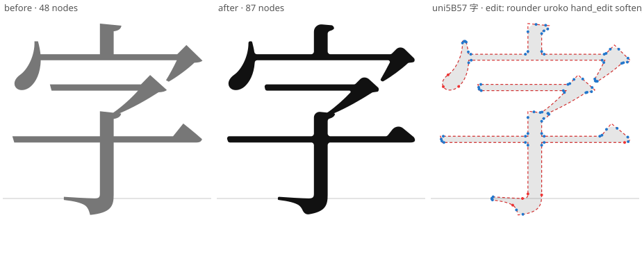
uni5B57 字 — edit: rounder uroko · hand_edit · soften_corners(40)
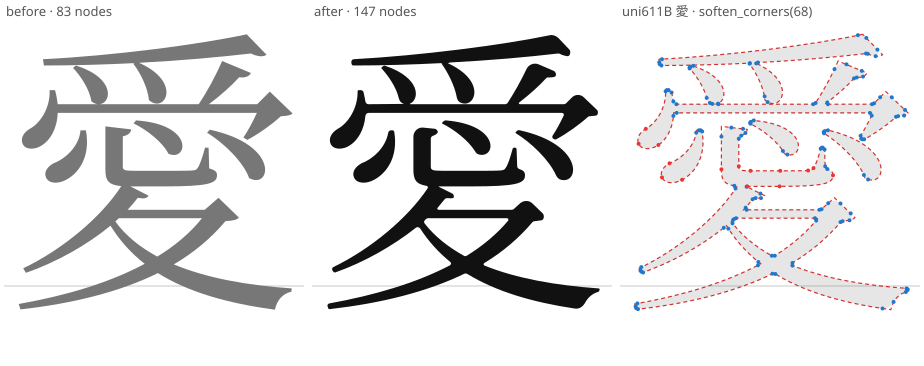
uni611B 愛 — soften_corners(68)
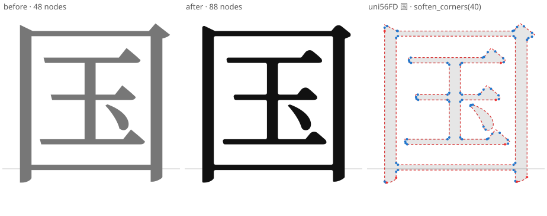
uni56FD 国 — soften_corners(40)
 uni3042 あ — edit: tail-12 · hand_edit · smooth_joins(7) · soften_corners(24)
uni3042 あ — edit: tail-12 · hand_edit · smooth_joins(7) · soften_corners(24)
 uni306E の — edit: tail-14 · hand_edit · smooth_joins(3) · soften_corners(4)
uni306E の — edit: tail-14 · hand_edit · smooth_joins(3) · soften_corners(4)
 uni308A り — edit: tail-9/-8 · hand_edit · smooth_joins(5) · soften_corners(4)
uni308A り — edit: tail-9/-8 · hand_edit · smooth_joins(5) · soften_corners(4)
 uni306F は — edit: hook+8/+4 · hand_edit · smooth_joins(14) · soften_corners(16)
uni306F は — edit: hook+8/+4 · hand_edit · smooth_joins(14) · soften_corners(16)
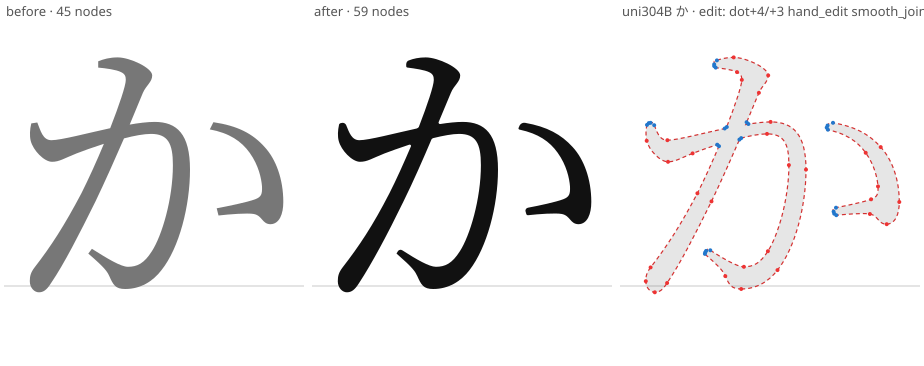
uni304B か — edit: dot+4/+3 · hand_edit · smooth_joins(14) · soften_corners(14)
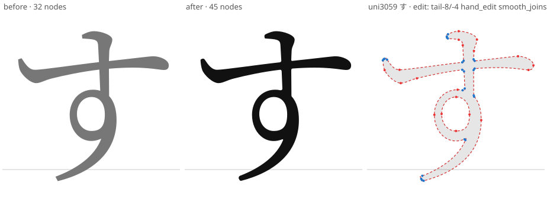
uni3059 す — edit: tail-8/-4 · hand_edit · smooth_joins(5) · soften_corners(13)
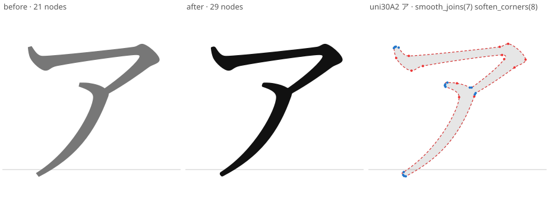
uni30A2 ア — smooth_joins(7) · soften_corners(8)
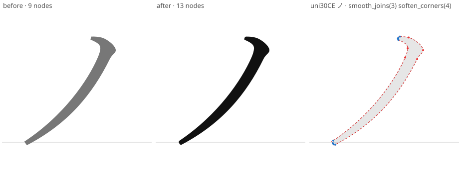
uni30CE ノ — smooth_joins(3) · soften_corners(4)
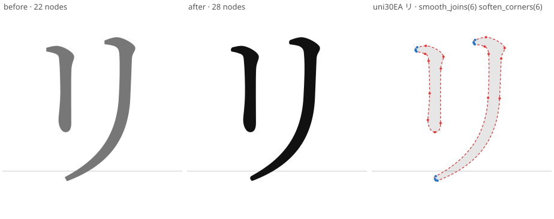
uni30EA リ — smooth_joins(6) · soften_corners(6)
 m m — edit: exit sweep · hand_edit · soften_corners(21) · offset(+3)
m m — edit: exit sweep · hand_edit · soften_corners(21) · offset(+3)
 n n — edit: exit sweep · hand_edit · soften_corners(16) · offset(+3)
n n — edit: exit sweep · hand_edit · soften_corners(16) · offset(+3)
 a a — soften_corners(6) · offset(+3)
a a — soften_corners(6) · offset(+3)
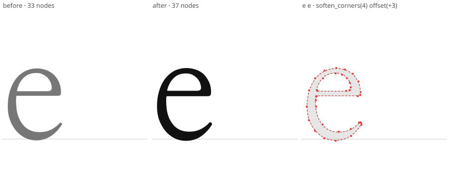
e e — soften_corners(4) · offset(+3)
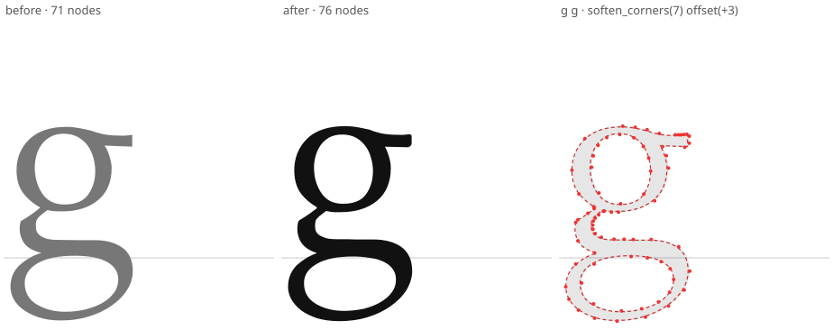
g g — soften_corners(7) · offset(+3)
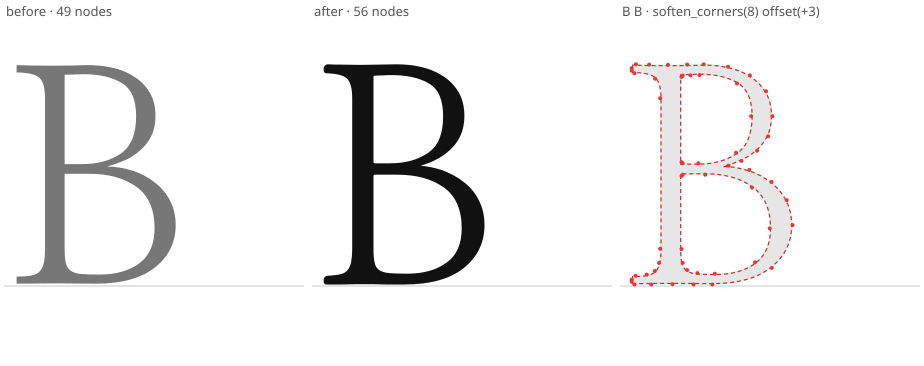
B B — soften_corners(8) · offset(+3)
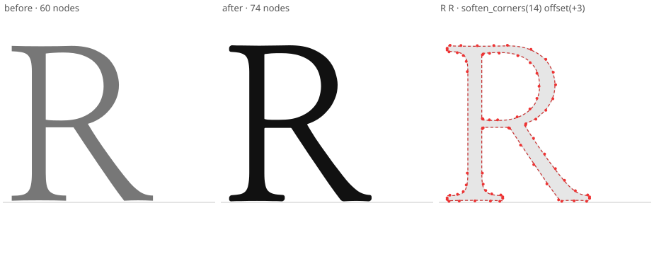
R R — soften_corners(14) · offset(+3)
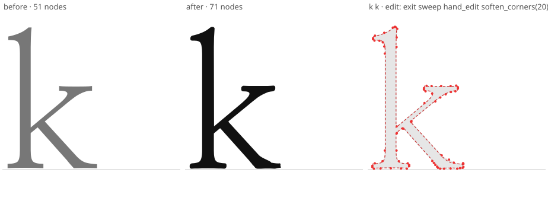
k k — edit: exit sweep · hand_edit · soften_corners(20) · offset(+3)
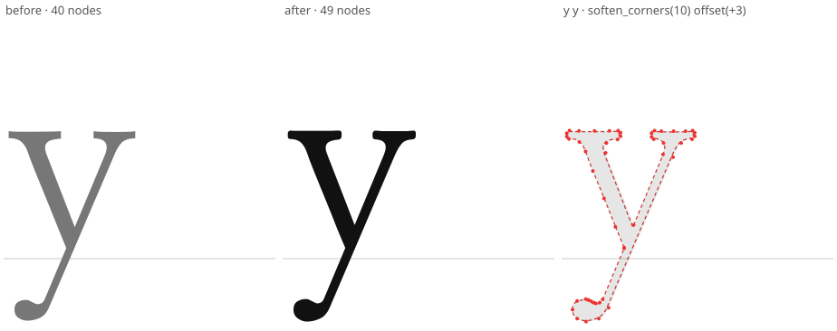
y y — soften_corners(10) · offset(+3)
 ampersand & — soften_corners(14) · offset(+3)
ampersand & — soften_corners(14) · offset(+3)
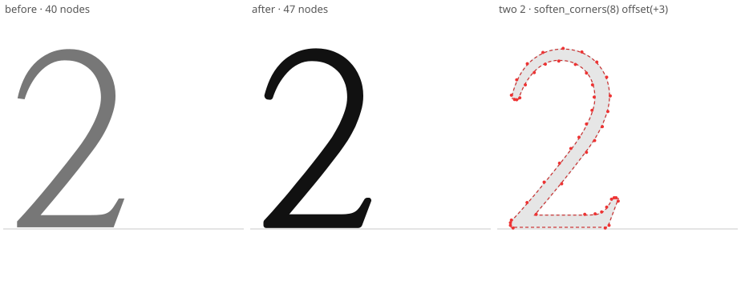
two 2 — soften_corners(8) · offset(+3)